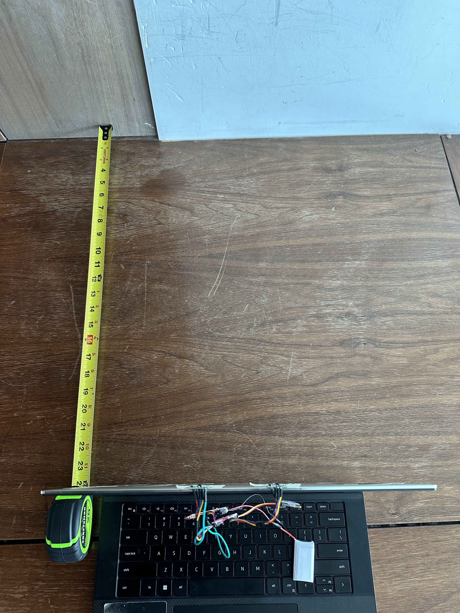
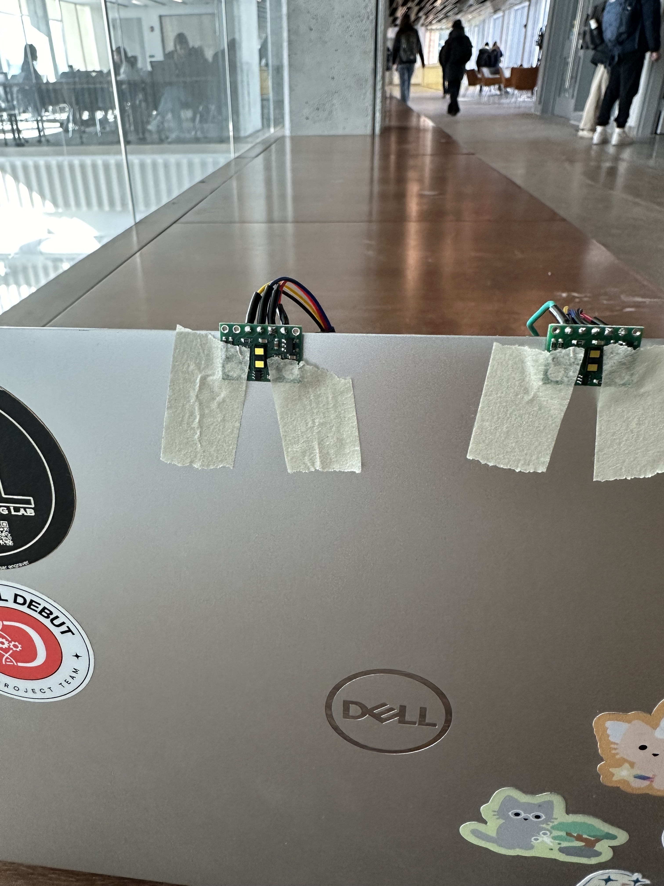
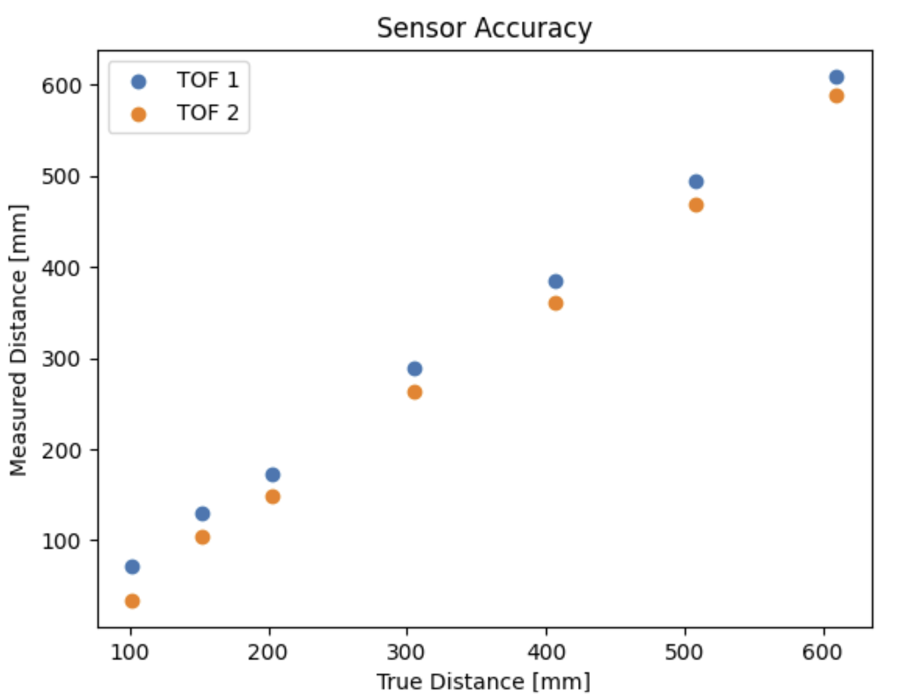
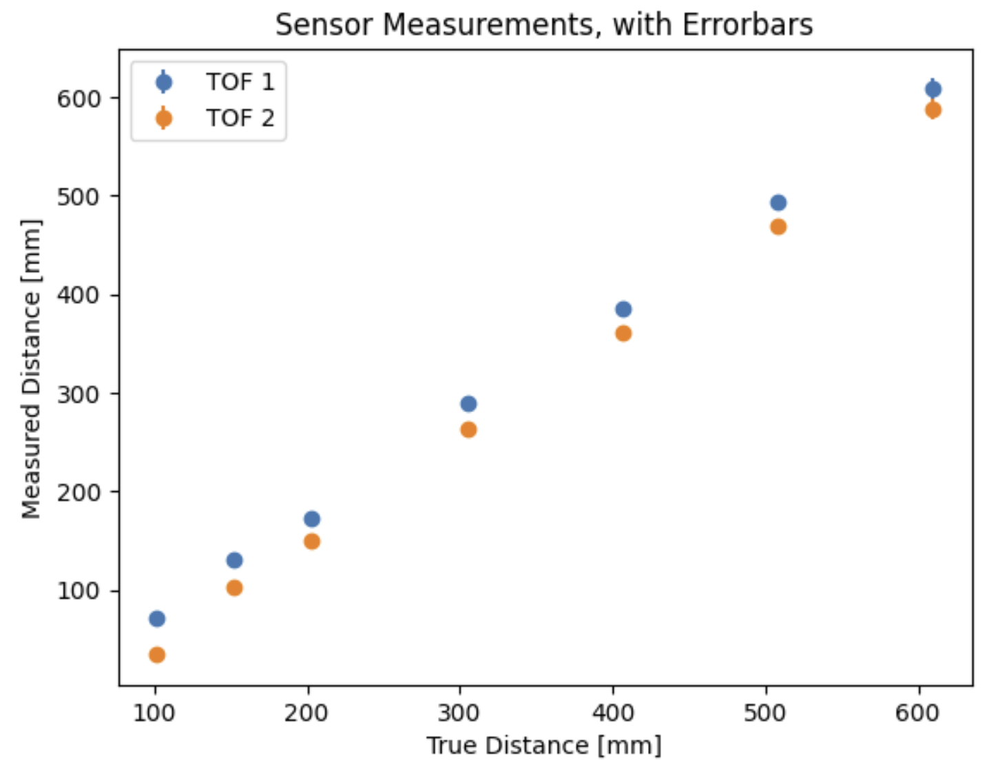
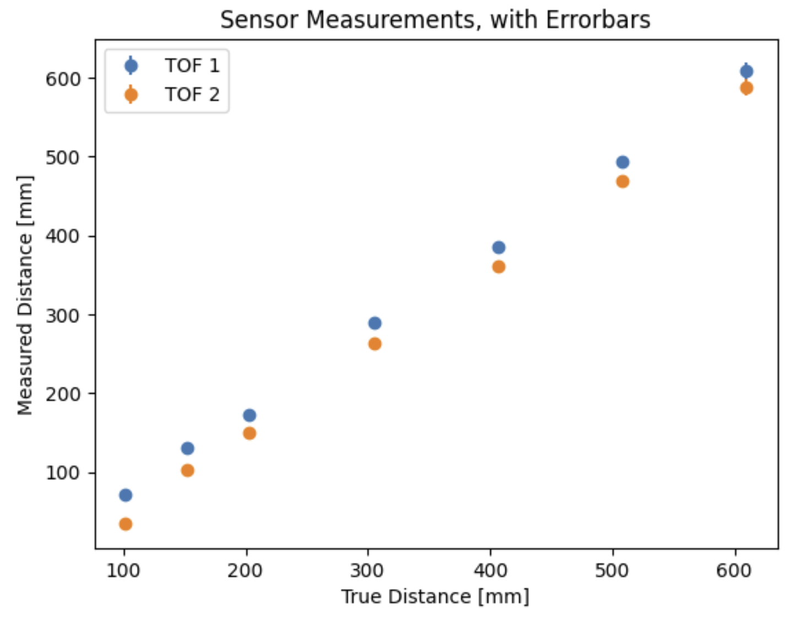
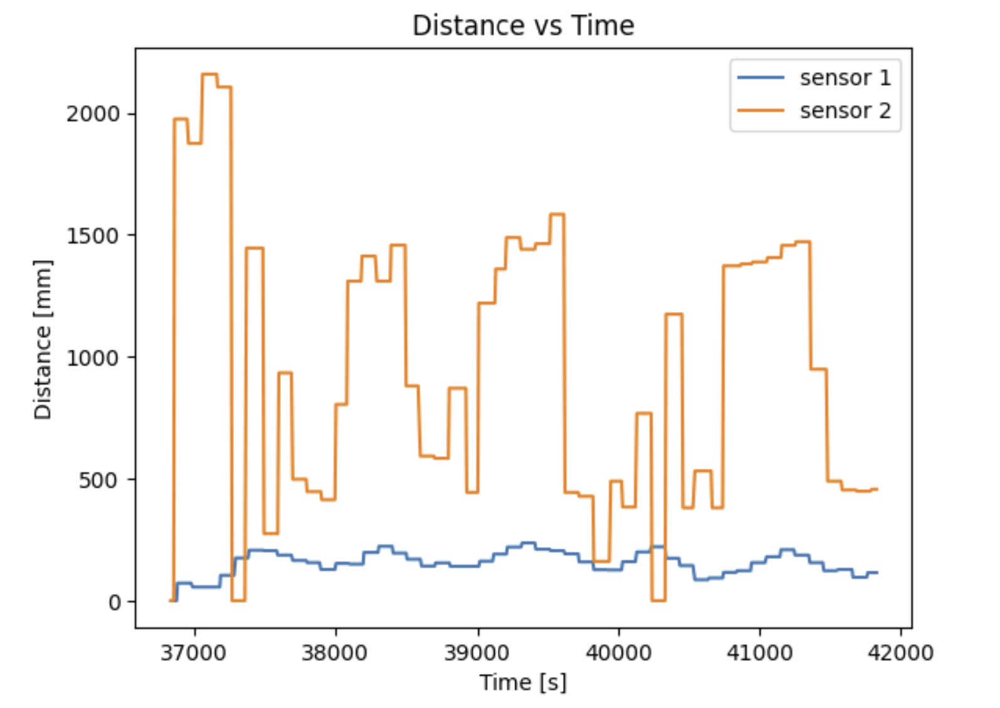
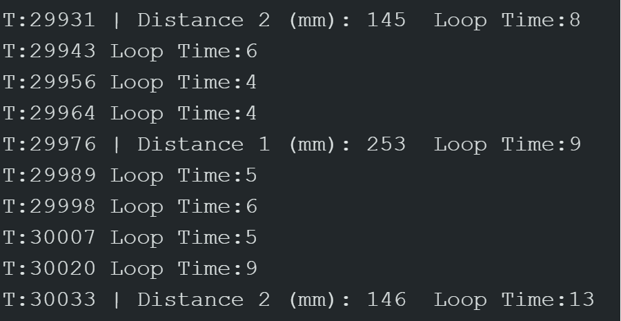

Lab 3 TOF
The purpose of this lab was to configure our TOF (Time-of-Flight) sensors, which are intended for measuring distances. We also began soldering components to the Artemis and began planning our future wiring.
Prelab
Before beginning the lab, we first considering how we would wire the entire robot. This included the IMU, 2 TOF sensors,
and 2 motor drivers alongside the batteries and QWIIC connect. A wiring diagram is shown below.

By default, the two TOF sensors will have the same I2C address. This means, unless this address is artificially changed, even if both sensors
were wired to the QWIIC connect, only one would measure any data. To aid this, we will be using the XSHUT pin on one of the
sensors to be able to configure our void setup() function accordingly. The plan is to first record the default address of the sensor,
and then shut down power to it and manually change its address such that when the second sensor initializes afterwards, its
address will be unique. The first default address is shown below, and represents the number 84 but bit shifted.

Regarding TOF sensor placement, I think it would be useful to have the sensors be perpendicular to each other. That is, have one on the front of the robot and one on either the right or left side. I believe this will be useful once we begin path planning and object detection to be able to see things not only in front of the robot, but to the side as well.
Soldering
We needed to solder a connector to the battery, and also solder the QWIIC connect wires to the TOF sensors. For the XShutdown pin, I only soldered that port on one of the sensors, as only one address needs to change. I chose the longer wires for the TOF sensors, since the IMU exact position matters less.
XShutdown & Configuring 2 TOFs
As discussed in the pre-lab, I only soldered the XShut pin of one of the TOF sensors. I wired mine to pin 2 on the Artemis, and I switched between HIGH and LOW to turn the first TOF off, change it's address, and then turn it back on. The code for this is shown below. In this setup function, I also decided to use the shortest distance mode for later tests of precision and accuracy.
pinMode(SHUTDOWN_PIN, OUTPUT);
digitalWrite(SHUTDOWN_PIN,0);
Wire.begin();
distanceSensor1.init();
//Shut down first sensor, change address
distanceSensor1.setI2CAddress(0x54);
if (distanceSensor1.begin() != 0) //Begin returns 0 on a good init
{
Serial.println("First sensor failed to begin...");
while (1)
;
}
Serial.println("Sensor 1 online!");
digitalWrite(SHUTDOWN_PIN,1);
if (distanceSensor2.begin() != 0) //Begin returns 0 on a good init
{
Serial.println("Second sensor failed to begin...");
while (1)
;
}
Serial.println("Sensor 2 online!");
distanceSensor1.setDistanceModeShort();
distanceSensor2.setDistanceModeShort();
Sensor Precision and Accuracy
With the two sensors wired up, I then focused on testing them. I set the distance mode to short, which measures a maximum of 1.3 meters at a max sampling rate of 50 Hz. I taped the TOF sensors to my laptop in a flat orientation, and used a tape measure to set up set distances from a wall. At each distance, I measured 100 data points with the intention of finding the mean and standard deviation at each distance. I then used the mean to determine a rough accuracy at each distance, while standard deviation told me more about the sensor's precision/repeatability.
 
The code snippet below shows how data was measured. Afterwards, it was sent via bluetooth using the same method as past labs.
distanceSensor1.startRanging(); //Write configuration bytes to initiate measurement
distanceSensor2.startRanging();
clear();
int startT = millis();
int i = 0;
int j = 0;
while(i < NUM_DATA_POINTS && j < NUM_DATA_POINTS){
time_data[i] = millis(); //normalized time
Serial.println(time_data[i]);
if (distanceSensor1.checkForDataReady()) {
distance1_data[i] = distanceSensor1.getDistance();
i++;
}
if (distanceSensor2.checkForDataReady()) {
distance2_data[j] = distanceSensor2.getDistance();
j++;
}
}
The results of this are shown below.

 

Based on this experiment, I noticed a few things about sensor performance.
- At far away distances (24 inches or 2 feet) both sensors lacked reliability, with standard deviations of around 10 mm (1 cm). In comparison, at all other distances the standard deviation value was 1.5mm or less.
- At distances under 1-2 inches (50.8 mm), data was fairly unreliable. One of my TOF sensors consistently just read 0 mm under 1 inch, and the other had a standard deviation of 1-1.5mm, however that is now a much larger percentage of the true value.
- The two sensors were consistently a few mm off from each other, however this may just be due to a non-robust setup (as in, they were just taped to my laptop).
Regarding ranging time, I would expect accuracy to be greater if a higehr ranging time was used for longer distances. The documentation shows that ranging can only be as low as 20 ms, which only works in short mode (since, at longer distances, more time is required for the laser to travel). I changed the ranging time budget of the sensor using the line of code, distanceSensor.setTimingBudgetInMs(x), where x was my timing budget. I tested at 20, 66, and 100 ms and noticed the smallest standard deviation (but also, least accuracy) at 100 ms for a short distance of ~6 inches. However, there were flaws in my experimental setup, namely that:
- The room was much darker than previous tests.
- The sensors themselves were not very secure, I was holding them with my hand.
Speed and Robustness
Collecting Data over Time
Similar to previous labs, I wrote code to collect and then send data over 5 seconds. On the Arduino side, this was very similar to my IMU data- I collected data in arrays and then sent it via bluetooth by looping over the arrays. The main difference was that I had to check whether or not sensor data was available, since sampling only occured as fast as 50 Hz. I did this using the .checkForDataReady() function.

One issue with this, though, is that .startRanging() is called at the start of every call of this command. For future labs, I want to just implement a StartRecording and StopRecording command with some kind of boolean flag that makes the sensors start and stop ranging and make things as efficient as possible.
On the python, I changed my notification handler to process the new data by creating new arrays, one per TOF and one for time:
def notif_handler(uuid, notif):
global time_data
global dist_1
global dist_2
s = ble.bytearray_to_string(notif)
sep_notif = s.split(" | ")
time_data.append(float(sep_notif[1]))
dist_1.append(float(sep_notif[2]))
dist_2.append(float(sep_notif[3]))
Discussion of speed
Next, I focused on trying to record data as fast as possible. To do this, I moved the .startRanging() command to be part of the void setup() function such that it was only called once. Then, I had a timer count how many times the loop() function ran in between data measurements. The code went as follows:
int start = millis();
Serial.print("T:");
Serial.print(start);
if (distanceSensor1.checkForDataReady()) {
int distance1 = distanceSensor1.getDistance();
Serial.print(" | Distance 1 (mm): ");
Serial.print(distance1);
}
if (distanceSensor2.checkForDataReady()) {
int distance2 = distanceSensor2.getDistance();
Serial.print(" | Distance 2 (mm): ");
Serial.print(distance2);
}
int end = millis();
Serial.print("\tLoop Time:" );
Serial.println(end - start);

The result of this was that there would be anywhere from 8-13ms between data measurements from the TOF sensors themselves (which, each sensor reads separately as well), and 4-8 ms between iterations of the loop as a whole. This implies that getting the measurements themselves took nearly half the time of the loop iteration. Although the sensor is meant to read at a frequency of 50Hz, in actually it is much slower. There is essentially a delay of nearly 100 ms between each individual TOF reading. This may be due to the checkForDataReady() function as well as the time taken to print to Serial. I think the ranging
Discussion
Ultimately, this lab taught me about proper soldering techniques as well as determining accuracy and precision of sensors. I imagine it will be useful to filter these TOF sensors in the future to create some kind of model of the robot's movements. After completing this lab, I also see ways I could improve my code by just having some command/function to start and stop recording data rather than my current methods.